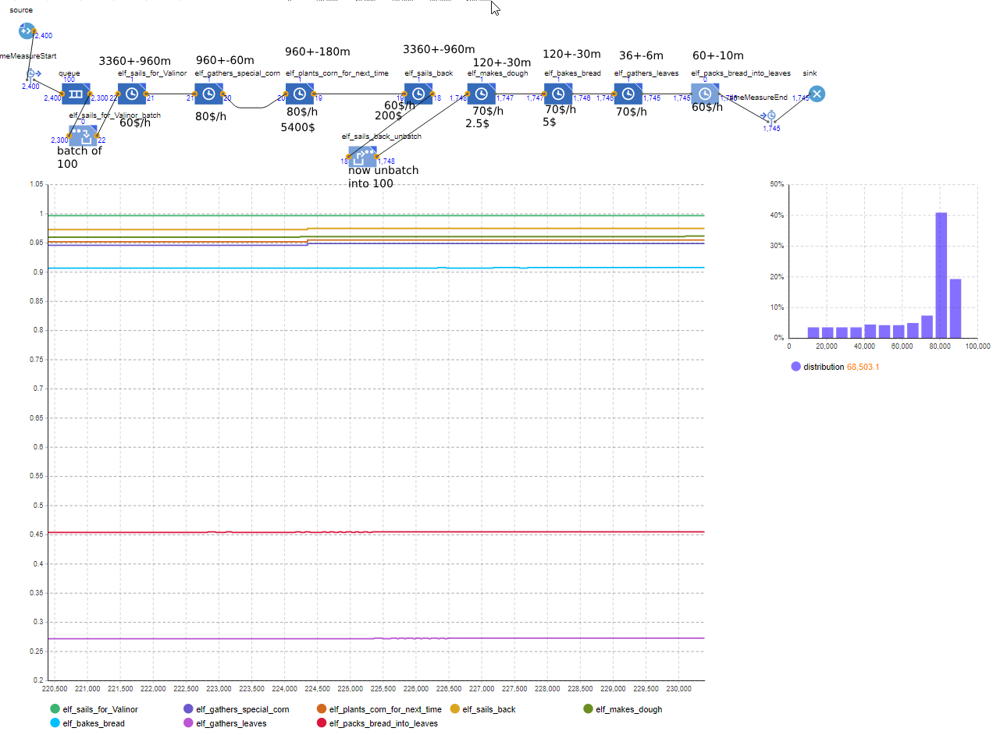
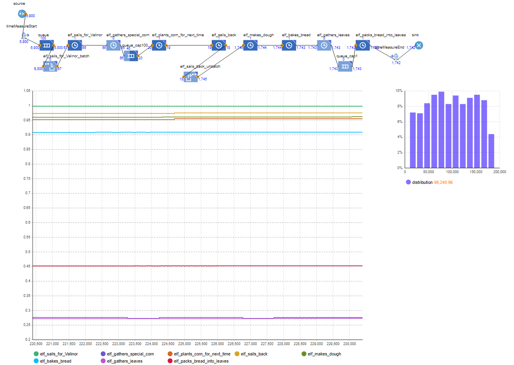
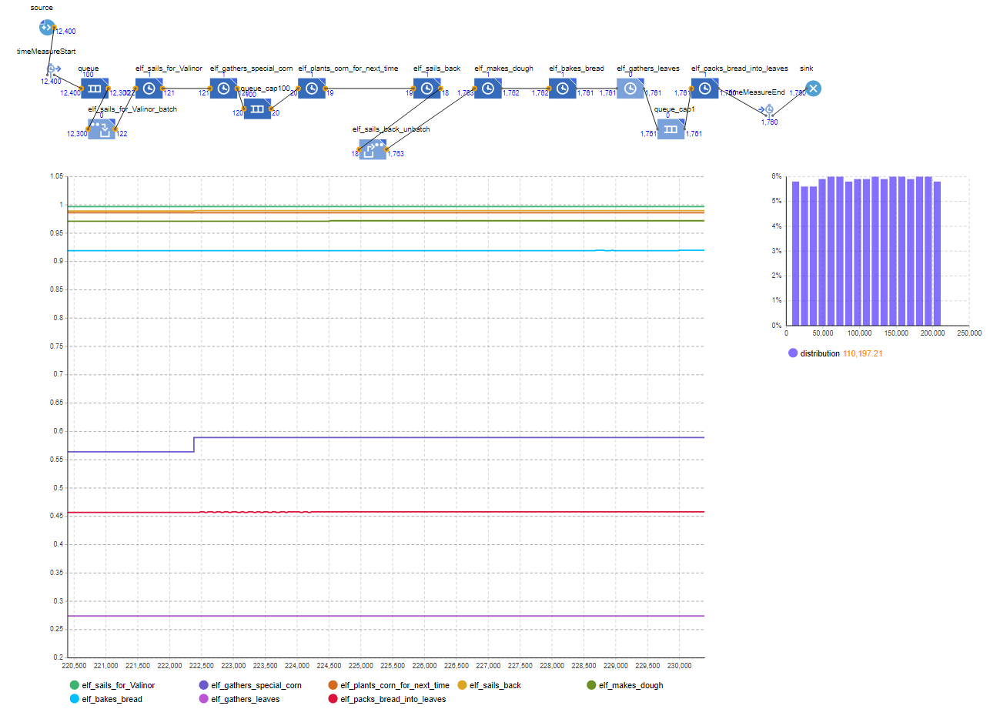
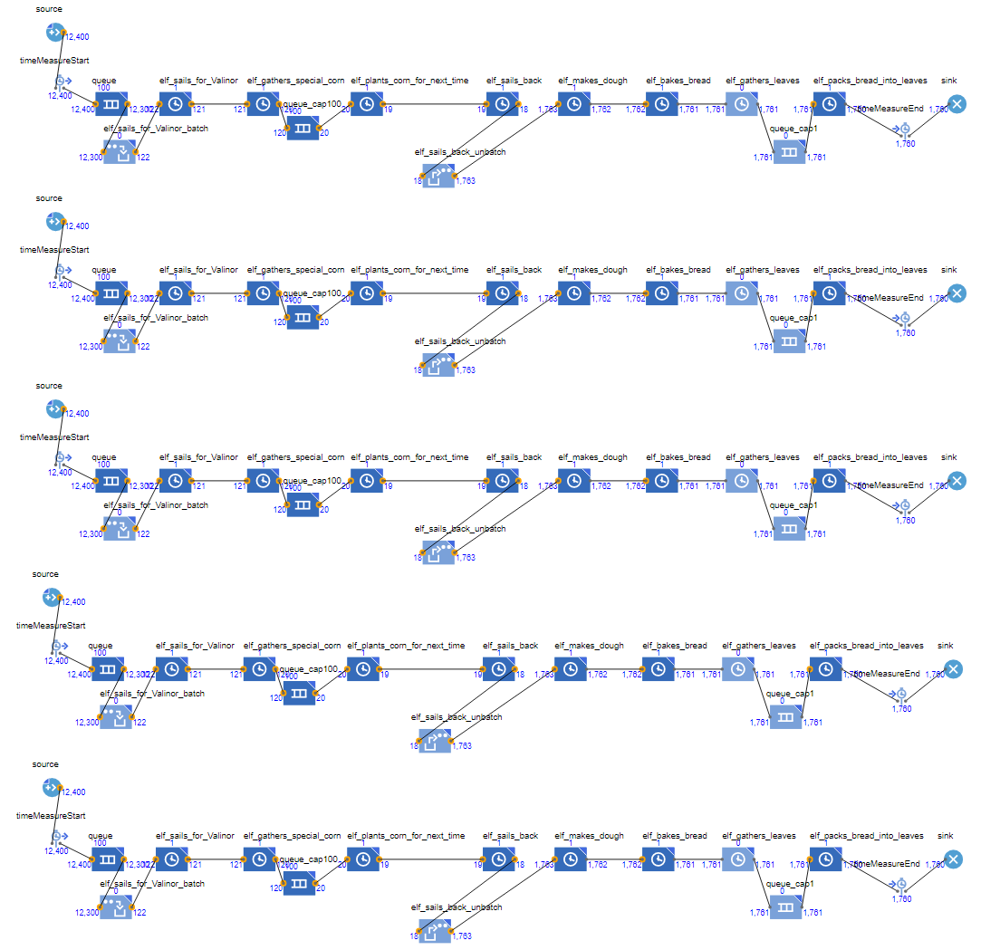
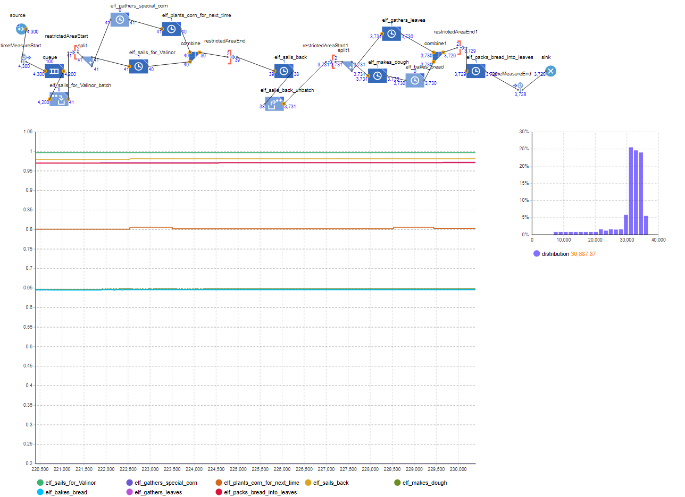
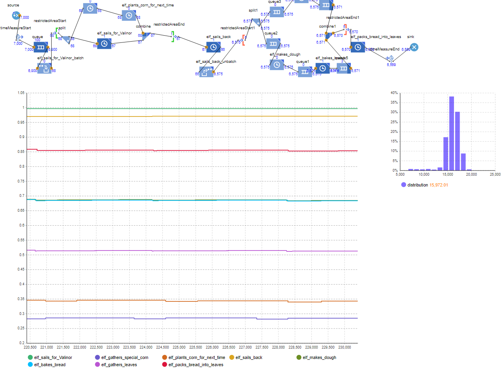
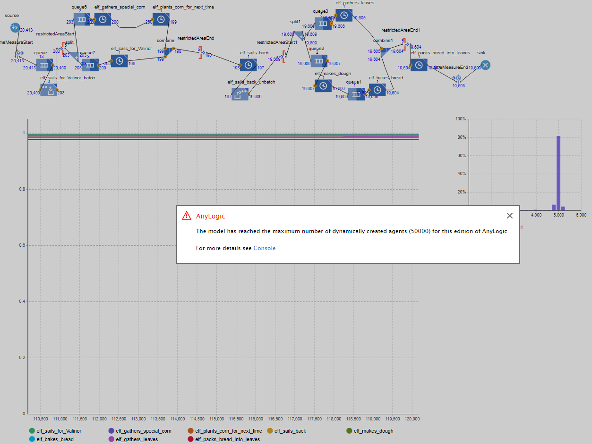

A
Creating lembas - an elven bread that can make a grown man’s stomach full with just one piece.
Similar products: energy bars, but not nearly as effective.
It needs special elven care, and elves have a developed economy - therefore, it is much more expensive to hire them and pay for resources.
But it also means Lembas can be sold much more expensive. Considering its quality and special abilities it should cost much. Therefore, we sell one loaf of Lembas at a price of 900$ (remember that one piece of Lembas is enough to saturate a grown man, and a loaf can be sliced into multiple pieces).
The production is also hard work, as one needs to sail to Valinor to get special corn from there, replant it for the next time, sail back, make special dough and bake it. In the end Lembas needs to be packed into special leaves, otherwise it gets spoiled.
B-I
24 months - 20*24 days - 160*24 hours - 9600*24 minutes
So long, because I have long stages in the process. See below.
Lembas:
- elf sails for Valinor
- 60$/h - paying the sailor
- =160*24*60=230,400 in 2 years
- 10,000$ year for repairs of a boat
- elf gathers special corn
- / 100 breads
- 80$/h - paying the gatherer
- =160*24*0.95*80=291,840 in 2 years
- elf plants corn for the next time
- / 100 breads -
- 80$/h - paying the planter
- =160*24*0.95*80=291,840 in 2 years
- 5,400$ / 100 breads for corns
- =19*5400=102,600 in 2 years
- elf sails back
- / 100 breads
- 60$/h - paying the sailor
- =160*24*0.98*60=225,792 in 2 years
- 200$ paid to transport corn onto and out of the boat
- =18*200=3,600 in 2 years
- elf makes special dough from special corn
- / 1 bread
- 70$/h - paying the baker1
- =160*24*0.96*70=258,048 in 2 years
- 2.5$ for eggs
- =1747*2.5=4,367.5 in 2 years
- elf bakes special bread
- / 1 bread
- 70$/h - paying the baker2
- =160*24*0.9*70=241,920 in 2 years
- 5$ for electricity
- =1746*5=8,730 in 2 years
- 200\Rightarrow a year, 8.3$ a month
- elf gathers special leaves
- / 1 breads
- 70$/h - paying the gatherer
- =160*24*0.28*70=75,264 in 2 years
- elf specially packs bread into leaves
- / 1 bread
- 60$/h - paying the packer
- =160*24*0.45*60=103,680 in 2 years
2 years = 10,000*2+230400+291840+291840+102600+225792+3600+258048+4357.5+241920+8730+75264+103680+200=1,858,271.5$
per day to continue operation (maximum, if everything goes wrong) = 10,000 + 60*8 + 80*8 + 80*8 + 5400 + 60*8 + 200 + 70*8 + 2.5*(8*60/120) + 70*8 + 5*(8*60/120) + 70*8 + 60*8 + 200 = 20,230$ (needed to have to keep the process going and pay at this moment)
average per day = 10,000/12/20 (amortized across all days of a year) + 60*8 + 80*8 + 80*8 + 5400/2(amortized) + 60*8 + 200/7 (amortized) + 70* + 2.5*(8*60/120) + 70*8 + 5*(8*60/120) + 70*8 + 60*8 + 200/24/20 (amortized) = 7,289.03$
If we also consider a manager on site at Valinor, a manager at the Lembas factory, a CEO (me) and two elves that provide communication between Valinor and the site through Internet Protocol via Avian Carriers:
- two managers, 100$/h each
- =160*24*100*2=768,000$ in 2 years
- CEO (me), 90$/h
- =160*24*90=345,600$ in 2 years
- 2 Operators of avian carriers, 90$/h each
- =160*24*90*2=691,200$ in 2 years
2 years = 1,858,271.5 + 768,000 + 345,600 + 691,200 = 3,663,071.5$
at the same time = 20,230
avg per day = 7,289.03 + 100*2 + 90 + 90*2 = 7,759.03$
The first one has no inventory, and, if I understood the task correctly, the resources are shown as prices under the delays. The ones “/h” are wages per hour, and the ones without “/h” are those one needs to pay for each time delay processes a unit.

{width=1000px}We can see that the elf_bakes_bread is the last one almost fully utilized. The ones after it are only partly utilized, so we can conclude that elf_bakes_bread is the bottleneck.
(Even if the previous stages are not fully utilized, anylogic considers them utilized when they are waiting for the next stage to finish, and do nothing. Therefore we can’t exactly tell, how processes before the bottleneck are utilized.)
Let’s now add some non-relevant inventory, because this is a part, in which we should make an unoptimized process. I added a queue with capacity 100 after elf_gathers_special_corn and a queue of capacity 1 after elf_gathers_leaves.

{width=1000px}Because of the queue after elf_gather_special_corn, the inventory is stored in the queue and it is considered free, therefore has a smaller utilization - but it works still the same amount of time.
We also see that the distribution of process time went up, as lots of unfinished products are now stored in the queue of 100 capacity. Earlier the ship wouldn’t even leave for Valinor, because of the bottleneck in bread baking, but now, with the added inventory, everything is stored there and new ships are being sent. It also means that we have to pay for the inventory.
Considering that storing gathered corn is expensive (it needs to be stored in perfect conditions, otherwise it is wasted), the price to store corn enough for one loaf of bread per day is 90$.
If there are 46 concurrent batches of 100 awaiting, it means we have corn enough for 4,600 bread loaves - 4600*90 = 414,000$ per day.
It means we are wasting lots of resources by making such large inventory. Now, in total, we need 20,700+414,000=434,700 on average).
Now I will analyze the process more:
- We produced 1,742 units in 2 years
- Which means that cycle time is 132 minutes (which is even worse than the average time of the bottleneck - 120 minutes, due to variability)
- The flow rate (and process capacity) are 0.455 per hour (number of produced / 2 years).
- The flow time (on the right diagram) is 98,241 minutes = 205 (working) days = 10 month (if each has 20 working days). It is so huge largely due to unfinished items being stored in inventory
- The utilizations of each stage can be seen on the plot (but the utilization of resources before the bottleneck are skewed due to spending most of time holding resource and waiting for the next one to finish)
There is still some budget left, but doing an unoptimized process, I will parallelize sailing to Valinor, gathering corn and planting new corn, so that there are 3 workers for each of them (while still having only one inventory for everyone).
However, I spent lots of time trying to find a way to add parallel delays, and did not find a satisfying solution. Therefore, I will just reduce the time it takes for each of the processes 3 times (which shows that, on average, the time difference between outcomes is three times smaller).

{width=1000px}Now we have to pay 3 times to the first 3 processes, so the price per day for resource costs and hiring are now:
10,000*3 + 60*8*3 + 80*8*3 + 80*8*3 + 5400*3 + 60*8 + 200 + 70*8 + 2.5*(8*60/120) + 70*8 + 5*(8*60/120) + 70*8 + 60*8 + 200 + 100*2 + 90 + 90*2 = 55,020)
And the cost to store inventory (which is now full):
90\*100(batches)\*(of)100(items)=900,000\
So, in total, 955,020 (or, on average, 920,834.7\)
At the meantime we produce 1,760 items instead of 1,742, which is almost the same.
The cycle time is 131 min (instead of 132), flow rate 0.458 (instead of 0.455). Flow time increased even more (110,197 minutes vs 98,240 minutes) due to more items waiting in the queue.
The task states that the time between produced items and between customers is the same, so in this part I do not worry about too much or too little production.
In general, blind increases in productivity of certain parts without any regard to bottlenecks and other metrics are not helpful.
B-II
The demand rate is 10x the current process capacity, which means every 13.2 minutes flow time (or 4.55 units per hour capacity).
Considering that we are still doing an unoptimized process, I will just make 5 such processes simultaneously (each with its own workers, inventory etc). The processes are independent, so the money spent and the number of produced items are the same for each process. That would mean that flow rate, on average, is 5 times larger (2.29 per hour), cycle time 5 times smaller (26.2 minutes), and the number of produced units is 8,800 in 2 years. And the money needed per day is 955,020*5=4,775,100 (or, on average, 4,604,173.5\)
However, the increase in 5 times means that we do not meet the demand (which increased 10 times). It means that the implied utilization is now 4.55/2.29=1.99 and we lose customers (which is understandable for an unoptimized process).

{width=1000px}Simply multiplying the number of parallel processes increases the flow rate, but it is not enough for a good optimization of resources.
C-I
First, I will remove any previous inventories and multiple workers per resource, as those were probably bad decisions.
Almost all stages are dependent on the previous ones. For example, an elf can not start baking bread while there is no dough.
The parallelizable possibilities are:
- we can order elves to gather corn and plant new one in place of the previous one, while an elf is still sailing to them.
- An elf can gather leaves while other elves are making dough and baking bread.
Next we can hire a few more elves (these costs were previously on elves sailing to Valinor in parallel) to bake bread and make dough - this is the bottleneck. Again, to simulate parallel workers that do the same work, I increase the capacity of the resources three times (because I hired 3 workers for baking and making dough).
At this point the process looks like this:

{width=1000px}It now produces 3,728 in 2 years, instead of 1,742. And the only new expenses are 2*(70$*8+70$*8)=2240$ (or 70$*160*24*0.65 + 70$*160*24*0.65 = 349,440$ in 2 years).
Now, we see that with 3 workers per baking and making dough, they are only utilized 65% of time and elf_gathers_leaves 100%. However with some testing, I concluded that the bottleneck is still making dough and baking it. The average time per item for each of the stages:
- sailing for Valinor: 3360/100=33.6 minutes
- sailing back: 3360/100=33.6 minutes
- gathering and replanting: 960/100 each, so 960/100*2 together = 19.2 minutes
- leaves gathering: 36 minutes
- making dough and baking it: 40 each, 80 minutes in total
- packing into bread: 60 minutes
A probable issue is that making dough and baking it are variable processes and very often they need to wait for each other. Let’s add a queue with capacity of 2 (due to it performing well in previous homeworks). I also added queues after the split due to anylogic erroring in some cases, when split tries to force push. The maximum number of items in queues is about 5 due to how the parallelization works in anylogic, so this should not affect the results too much.
After the change, both making dough and baking became >90% utilized, as long as leaves gathering. It tells us that the process after them is slowing both down. Let’s speed up the packing twice, by adding a worker.
Now the total number of produced is 5,559.
Now it seems that making dough and baking it are still the bottleneck. If we increase the number of workers to 5 and the leaves gatherers to 2, we will see the new number of 6,569.

{width=1000px}It now seems that packing, \lt[making dough and baking\rt], getting leaves are at 0.86:0.69:0.52 proportion of the current (or ~5:4:3). So we can increase in 5, 4 and 3 times correspondingly to have them at the same rate. And indeed, after the changes, all of them were utilized at 0.17. And now there are 10, 20, 20, 6 workers for packing, baking, making dough and finding leaves correspondingly.
Now the obvious bottleneck is sailing, so I will try to add more workers there and optimize the process of sailing to Valinor, sailing back and gathering and planting corn.
After the increase of workers for sailing 8 times and for gathering and planting corn 3 times, it seems that all stages are limiting at 1 utilization.

{width=1000px}Unfortunately, anylogic does not allow to run for 2 years, as I wanted initially, but we can still approximately extrapolate. If we had 19,574 items in 120,000 minutes, then we should have had 37,516 items in 230,000 minutes, which is a great advancement.
Let’s now calculate the cost - it changed in regards to more workers and a bit more inventory:
- sail for Valinor
- 8 workers
- 60/h\*8=480\/h
- 3840$/day
- gather corn
- 3 workers
- 80/h\*3=240\/h
- 1920$/day
- plant corn
- 3 workers
- 80/h\*3=240\/h
- 1920$/day
- sail back
- 8 workers
- 60/h\*8=480\/h
- 3840$/day
- make dough
- 20 workers
- 70/h\*20=1400\/h
- 11200$/day
- bake
- 20 workers
- 70/h\*20=1400\/h
- 11200$/day
- gather leaves
- 6 workers
- 70/h\*6=420\/h
- 3360$/day
- packing into leaves
- 10 workers
- 60/h\*10=600\/h
- 4800$/day
- two managers
- 100/h\*2=200\/h
- 1600$/day
- 100/h\*2=200\/h
- CEO
- 90$/h
- 720$/day
- 90$/h
- 2 Operators of avian carriers
- 90/h\*2=180\/h
- 1440$/day
- 90/h\*2=180\/h
- inventory:
- after splits - 20 max
- after making dough - 2 max
- in total 22 items, 100$ for each per day
- 2200$ per day in total
- in total 3840+1920+1920+3840+11200+11200+3360+4800+1600+720+1440+2200
- 48,040$ per day
Now let’s add all daily costs:
- 2.5$ for eggs, 4 times a day, 20 workers
- 50$ every time
- 200$ a day
- 5$ for electricity, 4 times a day, 20 workers
- 100$ each time
- 400$ a day
- in total
- 600$ a day
And costs that are needed from time to time:
- 10,000$ yearly for boat repair, 8 workers
- 80,000$ together
- 333.6$ daily, amortized
- 5,400$ every 2 days for corn grains, 3 workers
- 16,200$ total
- 8,100$ daily, amortized
- 200$ every 7 days to transport corn out of/into the boat, 8 elves on ships
- 1,600$ total
- 228.8$ daily, amortized
- 200$ for oven for 2 years, 20 workers
- 4000$ total
- 8.4$ daily, amortized
- in total
- 101,800$ max needed, if everything goes wrong in one day
- 8,670.8$ amortized daily
So, daily, on average, 57,310.8 might be needed.
I aim to always be able to respond to worst case, so we can scale at most 6 such processes in parallel (if we have a budget of 1 million). That would mean we are at most spending 902,640\ a day, but on average only 343,864.8$.
If I had more processes, it could be possible to have the average under the budget, but it would also mean no preparation for unexpected events.
Now, to compare the results with unoptimized:
- Cost - 902,640$ a day (it was 955,020$ previously)
- It is estimated that 37,516*6=225,096 would be produced in 2 years (it was 1,760 in the unoptimized variant
- So cycle time is 1.02 minutes (vs 131)
- Flow rate is 58.74 per hour (0.458)
- Flow time is now 4,838 minutes on average (110,197)
- And the utilizations are approximately 1
C-II
With 5 million available we can repeat the process more than 6 times. The optimal value here is 33, and the resulting (maximal) daily cost will be 4,964,520\, with the average of 1,91,256.4$.
It would scale all the stats with it:
- 1,238,028 processed in 2 years
- Cycle time 0.19 minutes
- Flow rate 323.07 per hour
- Flow time still 4,838 minutes
- Utilization still approximately 1
On average, we spend 1,891,256.4=2,322,000$. As such, the profit is 430,743.6$!
For the unoptimized case, though, we spend 4,604,173.5=16,470$. In that unoptimized case the business would not work at all, and there would be no Lembas!
It is very important to manage resources well, as it has drastic effects on the final outcome. This was an extreme case, where the first try was completely unoptimized (or rather antioptimized) and the second one just good. But even when constructing a better approach, several times did I optimize for just a few percentages that turned out to be more impactful when the numbers grew (such as adding inventory, which not only added a few percentage points, but also improved performance with massive parallel production).
We also saw how massive production can be more efficient. When sailing for corn for 100 loaves of bread I had the costs reduced drastically, and when I increased the number of workers, I could exactly match the proportions, so that everybody (approximately) works 100% of time (which was almost impossible with small scale, when a stage was an obvious bottleneck, but when adding a worker another one became an obvious bottleneck. Then, if I would have added a worker to the new bottleneck, the first one became one etc.)